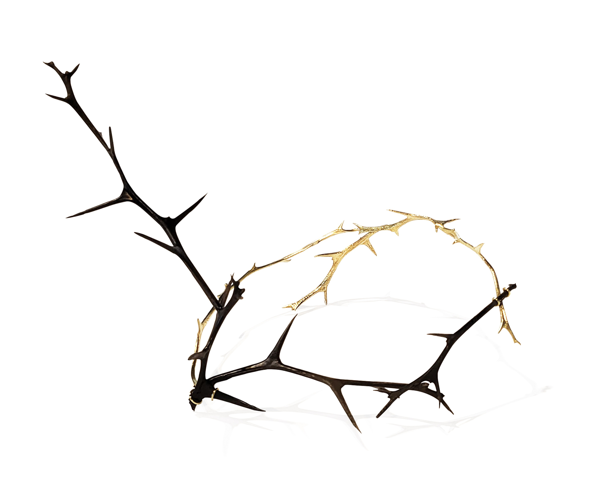

Thorns, About Pain
2024 / Trifoliate Orange branch, Otchill, Brass
The Thorn Series explores the process of me accepting wounds that gradually fade with the passage of time.
Pain brings the fear of being trapped and compressed.
Thorns tightening around the body, mind, and heart pierce them, turning them dark-
and making them unable to respond or resist. As the thorn draws closer, it carves an unforgettable memory
of pain.